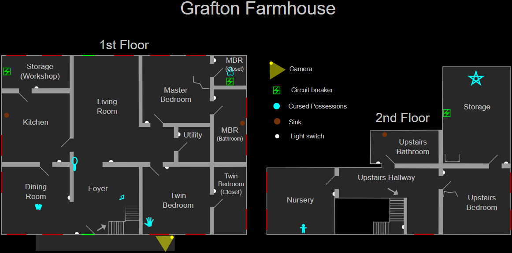

Grafton Farmhouse
Grafton Farmhouse — это небольшая карта в Phasmophobia и один из двух вариантов фермерского дома, наряду с Bleasdale Farmhouse.
Этот двухэтажный фермерский дом имеет просторный цокольный этаж с относительно большими комнатами и меньший верхний этаж с комнатами меньшего размера и кладовой.
Структура
На карте Grafton Farmhouse 4 спальни (включая 1 детскую), столовая, кладовая и мастерская, а также другие помещения.
Главная спальня (Master Bedroom) состоит из самой спальни, примыкающей ванной комнаты и гардеробной. Игра рассматривает эти три «подкомнаты» как единую комнату.
Спальня с двумя односпальными кроватями (Twin Bedroom) также занимает примыкающую к ней гардеробную.
Комната под названием «Кладовая» (Storage) находится наверху, рядом со спальней. Комната за кухней называется «Мастерская» (Workshop).

Укрытия и стратегии
На карте Grafton Farmhouse имеется 1 комплект запирающихся шкафчиков. В нескольких комнатах также имеются органические укрытия.
В зависимости от сложности, 6 из этих укрытий могут быть заблокированы из-за наличия громоздких предметов или их скрывающие элементы могут быть удалены:
- Любитель: —
- Средняя: ≤ 5
- Профессионал: ≤ 6
- Кошмар/Безумие: ≤ 7
- Игра втроём: +1 открытое укрытие
- Игра вчетвером: +2 открытых укрытия
Вот несколько примеров мест для укрытий на основе мебели:
- Кресло в коридоре на втором этаже
- Матрас в хранилище около кухни
- Коробки в кладовой главной спальни
- За стойкой с коробками в кладовой
- Коробки в кладовой спальни близнецов
Зацикливать призрака можно вокруг кухонного островка, дивана в гостиной или обеденного стола.
Призрак также может обходить общие стены кухни, столовой, прихожей и гостиной.